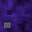

Excel 97 Egg
What's this?
You're looking at the magic carpet simulator hidden in Microsoft Excel 97 by programmers on its charting team.
Hiding things in your work for people to find is known as an "easter egg". To find Excel 97's, you perform a secret series of actions in an empty spreadsheet, and the Chart Wizard transports you here. In front of you on a stone monument, it lists the whole Excel team, which is a common easter egg characteristic.
What's it doing on a web site?
This is a faithful reproduction of that original easter egg, meant to preserve a part of computer history.
The World Wide Web has very low barriers to entry, and web pages like this one can be made to last a fairly long time.
This project is fully open source and MIT licensed, and it's taught me many things.
It's so clunky. What do all those buttons do?
Computers were clunky in 1997. You can change it in the options:
|
|
( B ) | Bird's Eye View |
A third person perspective to help navigate |
|
|
( C ) | Lighting Cutoff | Changes the maximum distance of the fog and drawn terrain. |
|
|
( Q ) | Show Quad Edges | Highlights the boundaries of the tiled terrain geometry. |
|
|
( T ) | True‑Color Textures | Renders smoother textures in millions of colors, rather than the original indexed‑color textures. |
|
|
( R ) | Limit Draw Resolution | Forces the dimensions of the rendered scene to 640 x 480, also known as VGA graphics mode. |
|
|
( S ) | Limit Draw Speed | Caps the frame rate at approximately 15 FPS. |
|
|
( G ) | Show Sindogs |
Gives the horizon texture a sinusoidal glow. (Named after a sneaky Windows bug ) |
|
|
( F ) | Fullscreen | Expands the page to fill the entire screen. |
Flight Manual
On devices with a pointer : move the pointer to change your heading, left‑click and right‑click to speed up and slow down, and hold the spacebar to brake. You can also scroll through the credits the way you scroll through an ordinary web page.
Look at you, you're a natural.
On devices with a touch screen: move one finger around to change your heading, and hold another at the top, bottom, or middle of the screen to speed up, slow down or brake. Not bad, eh?
In the unlikely event of a water landing, you may find a flotation simulation device under Section 5.7 of the USB HID Usage Tables.
How and why did someone hide this in Excel 97?
Shrewdly in their downtime, because some people are just fun.
Big programs took a very long time to compile, test and stabilize back in the nineties. While they waited, Microsoft's software developers pranked each other, learned to juggle, and made their own games with the new tools at their disposal.
Some games got bundled with Windows or sold in "Entertainment Packs". Others stowed away in published software as easter eggs.
In my opinion, this specific easter egg was how someone taught themselves to use GDI, DirectDraw in a real‑time software renderer , and is an homage to Bullfrog Productions's game series Magic Carpet— taking direct inspiration from the techniques Glenn Corpes used to efficiently render 3D terrain and water.
It can be considered a followup to Excel 95's Doom‑inspired easter egg, "Hall of Tortured Souls". The two have some minor things in common, though they're rendered very differently.
Microsoft didn't mind any of this at the time, as long as the easter eggs weren't directly linked to the main program. That might've given the company some cover in case a PR disaster struck. It also meant the authors had to work out how to load and run the easter egg code without referencing it— by overwriting a function pointer when certain keys were held down at once, for instance.
Redmond's lenience wouldn't last. Its "Trustworthy Computing Initiative" in 2002 prescribed major changes to how its developers wrote software, making a program's user productivity, stability and security paramount— which in turn made easter eggs unshippable.
Today, software easter eggs are almost unheard of outside the game industry.
How'd you turn it into a web site?
I'm so glad you asked!
To reverse engineer the original program, its memory was recorded with ProcDump as it ran on Windows XP in Virtual Box. Memory snapshots were inspected and compared with Hex Fiend. The credit text, terrain data, framebuffer and textures were recovered this way. A custom Win32 program was written to collect the color lookup table, which the project uses in indexed‑color mode. Larger True‑Color textures were custom made in Photoshop.
Several small details, like the key bindings and text formatting, were found with a decompiler; others, such as the dithering technique, were discovered by analyzing framebuffers in Photoshop. Lastly, the framebuffers were fed into fSpy to recover the camera properties and the player's starting position and rotation.
A prototype was built in Three.js before this more detailed port was made in regl. The controls, data parser, renderer and shaders were all custom made and updated over time to recapture the original experience.
Torus Trap
Notice the landscape repeats in every direction, so you can fly forever. In fact this whole world is "charted" from a square "spreadsheet" only 64 cells wide.
So, how is it so easy to get lost?
There are a few tricks to make small worlds feel big. Provide no navigational instruments or vantage points; give the world a uniform texture and few distinct landmarks; the short drawing distance hides the terrain's repetition; and in fact, many of its features loop around the edge of the world to join back with themselves, so there's no visible seam.
Above all, the camera is tightly zoomed in, with a field of view of only 26 degrees. That's like piloting a plane through a porthole the size of a dinner plate two feet in front of your face. Of course you're lost. Relish it.
Behind the Sheens
Rapid lighting and texturing are the enduring pillars of 3D graphics cards, but in the nineties most Excel users and even gamers didn't have those. Rendering was done in software, not hardware, and making something look good and draw fast while running on a Pentium was a real challenge.
A common way to light things quickly is to only do it once, ahead of time. This is called "pre‑computed" or "baked" lighting, and while we bake data into special textures nowadays, back then it was common to bake to vertices, which are the points that define shapes.
The easter egg's terrain data is like a baked lasagna— the elevation, lighting, and material of each point is baked into a corresponding 64x64 grid.
It's clear just by looking at them that the lighting data was created from the elevation data, but it's not a realistic lighting calculation. Instead, like an early form of ambient occlusion, the pointy areas were made darker than the smooth ones, which is also like a baked lasagna.
Earning Their Stripes
By default, this simulator draws with only the original 256 colors, which took some effort. It has to load the color lookup table and indexed‑color textures into video memory, and its shaders map texel values to colors in the table, like an old VGA RAMDAC.
That table holds sixteen shades of sixteen colors, so most pixels get mapped to the same shade as their neighbors, causing a visual artifact known as banding. A technique called dithering can hide banding by adjusting pixel values with random noise or high frequency patterns.
The original easter egg draws terrain one triangle at a time, using scanline rendering. A scanline is a row of pixels drawn left to right. Each pixel's final color and texture depends on its distance from the scanline edges. This code is where the authors chose to add very simple dithering. That skews the dither pattern along the triangle edges, but it inexpensively doubles the range of the terrain shading from sixteen to thirty‑two.
Graphics hardware doesn't render using scanlines, but this project simulates them. Its vertex shader maps each triangle's left edges to a skewed space, and the fragment shader offsets the dither of each pixel by the distance along its scanline. The result is subtle, but accurate.
Acknowledgements
Thank you Ed Fries for providing insight into the culture at early Microsoft, and Hank Chien for describing the charting team and pointing me in the right direction.
Peter Ammon's Hex Fiend was (and is) indispensible, as was (and is) Mike Pavone's reverse engineering expertise, computer history familiarity and general camaraderie.
Jordan Scales provided the excellent CSS and web font basis for this about page. Mike Blackney demonstrated a technique for generating SDFs in Photoshop, which saved me time and money.
Thank you Tyler Lyn for your continued love and support. 🥰